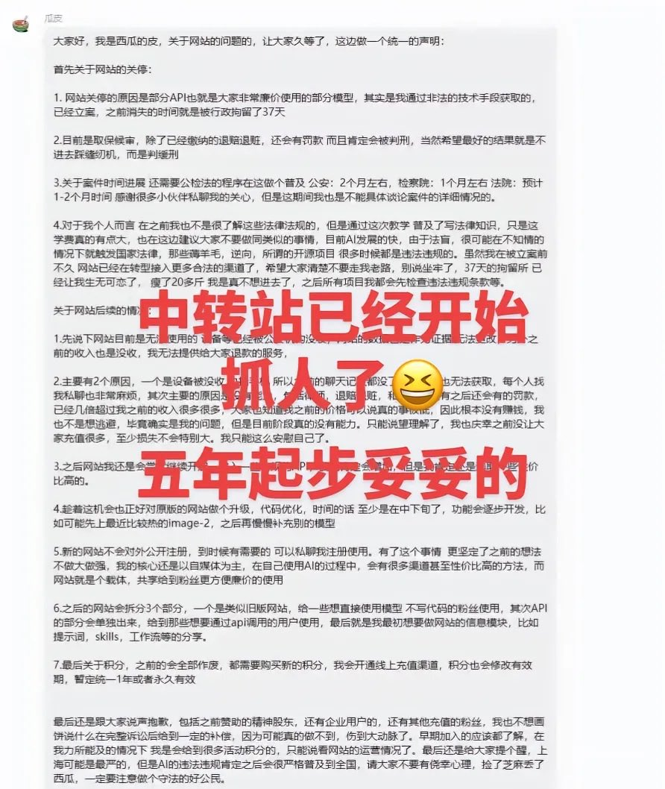

時璃風医詩🌈🏳️🌈
@hagishigure
对比一下之前看到的卖思诺思八个月才无罪释放的新闻你就会发现在中国卖API还真赚。

昨天
@YesterdayBigcat
上海一名API中转站的经营者发布声明称，他因运营中转站被上海警察关了37天，目前处于取保候审状态，将来肯定会被判刑。他还告诫同行，上海是打击中转站最严厉的地方，还有可能普及全国。（2026.05.12） https://t.co/Sj67miAoiy